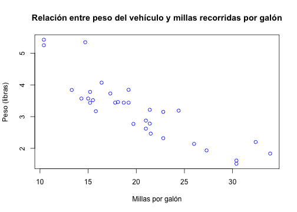

R es un lenguaje y entorno open-soure para computación y gráficos estadísticos
R proporciona una amplia variedad de funcionalidades que permiten llevar adelante diferentes estudios estadísticos (modelado lineal y no lineal, pruebas estadísticas clásicas, análisis de series temporales, clasificación, agrupamiento) y visualizarlos a través de gráficos.
Es altamente extensible por lo que existen una importante cantidad de paquetes de software (4000) que extendienden su funcionalidad
Introducción a la programación en R
Curso de Data Science con Impacto Social
Jorge Saldivar
Universidad Católica "Nuestra Señora de la Asunción"
¿Qué es R?
Objetos
Todo en R es un objeto
El objeto más básico en R es el vector, que es un contenedor de objectos que puede alojar objetos del mismo tipo
La única excepción son las listas (o list en inglés), que son vectores que pueden contener diferentes tipos de objetos
Tipos de objetos
R maneja cinco tipos básicos (o atómicos) de objetos:
caracteres (letras) o character en inglés
numérico (números reales de doble precisión) o numeric en inglés
entero o integer en inglés
complejo o complex en inglés
lógico (True/False) o logic en inglés
Creando vectores
La función c() puede ser usada para crear vectores de objetos
nu = c(0.5, 0.6) ## vector de 2 objetos del tipo númerico
l1 = c(TRUE, FALSE, TRUE) ## vector 3 objetos del tipo lógico
l2 = c(T, F) ## vector de 3 objetos del tipo lógico
ch = c('a') ## vector de 1 objeto del tipo caracter
it = 9:29 ## vector de 21 objetos del tipo entero
co = c(1+0i, 2+4i) ## vector de 2 objetos del tipo complejo
El caracter # indica que lo que está a la derecha es un comentario y por tanto es ignorado
El operador : es usado para crear secuencia de enteros
Creando vectores
También se pueden crear vectores usando la función vector()
v = vector('numeric', length = 10)
v[1] = 5
v # auto-impresion
## [1] 5 0 0 0 0 0 0 0 0 0
print(v) # impresion explícita
## [1] 5 0 0 0 0 0 0 0 0 0
El [1] indica que el objeto es un vector y que 5 es su primer elemento
Mezclando objetos
Que pasaría si mezclamos objetos de diferentes tipos en un mismo vector
y = c(1.7, 'a') ## character
y
## [1] "1.7" "a"
y = c(TRUE, 2) ## numeric
y
## [1] 1 2
Mezclando objetos
y = c('a', TRUE) ## character
y
## [1] "a" "TRUE"
Cuando mezclamos objetos de clases distintas, R intenta convertir los objetos a una misma clase siguiendo el siguiente esquema de precedencia y ocurriendo lo que se denomina coeción implícita:
- logical (menor precedencia)
- integer
- numeric
- complex
- character (mayor precedencia)
Coeción Explícita
Los objetos pueden ser explícitamente convertidos de una clase a otra utilizando (de ser posible) las funciones as.*
x = 0:6
class(x) # la función `class` se utiliza para averiguar la clase de un objeto
## [1] "integer"
x = as.numeric(x)
x
## [1] 0 1 2 3 4 5 6
Coerción Explícita
x = as.logical(x)
x
## [1] FALSE TRUE TRUE TRUE TRUE TRUE TRUE
x = as.character(x)
x
## [1] "FALSE" "TRUE" "TRUE" "TRUE" "TRUE" "TRUE" "TRUE"
Coerción Explícita
No todos los objetos de una clase se pueden convertir a otra, por ejemplo
x = c("a", "b", "c")
as.numeric(x)
## Warning: NAs introduced by coercion
## [1] NA NA NA
NA ("not available") es utilizado por R para indicar que un valor no está disponible
as.logical(x)
## [1] NA NA NA
Matrices
Las matrices son un tipo especial de vectores donde los elementos se encuentran organizados en filas y columnas.
m = matrix(1:6, nrow = 2, ncol = 3) # creando una matriz de 2 filas y 3 columnas
m
## [,1] [,2] [,3]
## [1,] 1 3 5
## [2,] 2 4 6
En R las matrices son objetos que cuentan con el atributo dimensión.
dim(m) # opteniendo la dimensión de la matriz
## [1] 2 3
Matrices
Las matrices son construidas por columna. El primer elemento se encuentra en la esquina superior izquierda y a partir de ahí los siguientes van creandose a lo largo de las columnas
m = matrix(1:6, nrow = 2, ncol = 3)
m
## [,1] [,2] [,3]
## [1,] 1 3 5
## [2,] 2 4 6
Para acceder a los elementos de la matriz se debe indicar entre [] la fila y columna separado por ,
m[2, 1] # elemento de la segunda fila primera columna
## [1] 3
Atributos
La función attributes sirve para conocer los atributos de un objeto en R.
attributes(m)
## $dim
## [1] 2 3
cbind-ing y rbind-ing
Las matrices también pueden ser creadas acoplando vectores por columna o fila con las funciones cbind() and rbind(), respectivamente
x = 1:3 # creando vector con la sequencia de enteros 1, 2, 3
y = 10:12 # creando vector con la sequencia de enteros 10, 11, 12
z = cbind(x, y) # acoplando los vectores por columna para crear una matriz
z
## x y
## [1,] 1 10
## [2,] 2 11
## [3,] 3 12
w = rbind(x, y) # acoplando los vectores por fila para crear una matriz
Listas
Las listas son un tipo especial de vectores que pueden contener elementos de diferentes clases
x = list(1, "a", TRUE, 1 + 4i)
x
## [[1]]
## [1] 1
##
## [[2]]
## [1] "a"
##
## [[3]]
## [1] TRUE
##
## [[4]]
## [1] 1+4i
Factores
Los factores son usados en R para representar datos categóricos
x = factor(c('yes', 'yes', 'no', 'yes', 'no'))
x
## [1] yes yes no yes no
## Levels: no yes
La función table muestra la frecuencia de cada categoría.
table(x)
## x
## no yes
## 2 3
Factores ordenados
En R los datos ordinales se represetan a través de factores ordenados. El orden de los factores se establece utilizando el argumento levels de la función factor()
x = factor(c('yes', 'yes', 'no', 'yes', 'no'), levels=c('yes', 'no'))
x
## [1] yes yes no yes no
## Levels: yes no
Valores desconocidos
En R los valores desconocidos se representan con los símbolos NA (o NaN para operaciones matemáticas indefinidas)
is.na()es usado para chequear si un objeto esNAis.nan()es usado para comprobar la presencia deNaNUn valor
NaNes al mismo tiempoNApero lo opuesto no se da
x = c(1, 2, NA, 10, 3)
is.na(x)
## [1] FALSE FALSE TRUE FALSE FALSE
Data Frames
En R los data frames son usados para alojar datos en forma tabular
Son un tipo especial de matriz que puede contener elementos de diferentes clases (las matrices pueden tener solo elementos del mismo tipo)
Usualmente son creados mediante las funciones
data.frame,read.table(), oread.csv()Pueden ser convertido a una matriz por medio de la función
data.matrix()
x = data.frame(c1 = 1:5, c2 = c(T, T, F, F, T), c3 = c('a', 'b', 'c', 'd', 'e'))
x
## c1 c2 c3
## 1 1 TRUE a
## 2 2 TRUE b
## 3 3 FALSE c
## 4 4 FALSE d
## 5 5 TRUE e
Data Frames
Número de filas del data frame
nrow(x)
## [1] 5
Número de columnas del data frame
ncol(x)
## [1] 3
Names
Nombre de las columnas del data frame
x
## c1 c2 c3
## 1 1 TRUE a
## 2 2 TRUE b
## 3 3 FALSE c
## 4 4 FALSE d
## 5 5 TRUE e
names(x)
## [1] "c1" "c2" "c3"
Names
Las listas pueden también tener nombre
x = list(a = 1, b = 2, c = 3)
names(x)
## [1] "a" "b" "c"
Estructura de control: if
if(<condicion>) {
## hacer algo
} else {
## hacer otra cosa
}
if(<condicion1>) {
## hacer algo
} else if(<condicion2>) {
## hacer algo diferente
} else {
## hacer otra cosa
}
Estructura de control: if
Ejemplo
x = 2
y = 0
if (x > 3) {
y = 10
} else {
y = 50
}
y
## [1] 50
Estructura de control: if
La clausula else no es siempre necesaria
if (<condicion>) {
# hacer algo
}
x = 10
if (x==10) { # !=
print('El valor de x es el esperado')
}
## [1] "El valor de x es el esperado"
Ciclos: for
Los ciclos for toman una variable interator y le asignan valores sucesivos de una secuencia o vector. Los ciclos for son los más utilizados para iterar sobre los elementos de un objeto
x = data.frame(c1 = 4:6, c2 = 18:20)
for(i in seq_len(nrow(x))) {
print(x[i, 'c1']) # por cada fila imprimo el valor de la primera columna (nombre)
print(x[i, 2]) # por cada fila imprimo el valor de la segunda columna (número)
}
## [1] 4
## [1] 18
## [1] 5
## [1] 19
## [1] 6
## [1] 20
Este ciclo toma la variable i y en cada iteración le asigna un nro de fila (1, 2, 3) y luego termina.
Iteraciones: apply
La función apply nos permite ejecutar operaciones repetitivas sobre matrices y data frames
x = data.frame(c1 = 1:3, c2 = 10:12); x
## c1 c2
## 1 1 10
## 2 2 11
## 3 3 12
apply(x, 2, median) # apply(<objeto>, <fila (1) o columna (2)>, <funcion>)
## c1 c2
## 2 11
Otras funciones que se puede utilizar: max, min, mean, sum
Iteraciones: apply
x = data.frame(c1 = 1:2, c2 = 10:11)
x
## c1 c2
## 1 1 10
## 2 2 11
mult = function(x, c) {
return (x*c)
}
apply(x, 2, mult, 5) # apply(<objeto>, <fila (1) o columna (2)>, <funcion>, <parametro>)
## c1 c2
## [1,] 5 50
## [2,] 10 55
Iteraciones: sapply
Similar a su par apply pero para listas y vectores. Retorna una lista
x = data.frame(c1 = 1:2, c2 = 10:11)
x
## c1 c2
## 1 1 10
## 2 2 11
area_circulo = function(r) {
return (3.14*r^2)
}
sapply(x[,'c1'], area_circulo) # sapply(<lista o vector>, <funcion>, <otros parametros>)
## [1] 3.14 12.56
Funciones especiales para operaciones comúnes
rowSums, rowMeans, colSums, colMeans
x = data.frame(c1 = 1:5, c2 = 10:14)
x
## c1 c2
## 1 1 10
## 2 2 11
## 3 3 12
## 4 4 13
## 5 5 14
rowSums(x)
## [1] 11 13 15 17 19
Lectura de datos
read.csv es la función más utilizadas para la lectura de datos en formato csv. Algunos de sus parámetros son:
file, nombre del archivo, incluyendo la ruta al mismoheader, parámetro lógico indicando si el archivo cuenta con un encabezadoskip, número de filas a ignorar desde el inicio del archivocolClasses, un vector de caracteres indicando la clase de cada columna en el datasetnrows, el número de filas del dataset a leercomment.char, cadena de caracteres indicando el caracter usado para comentariosstringsAsFactors, parámetro lógico indicando si las variables de tipo caracter deben ser codificadas como factores
data = read.csv(file = 'becal-cobertura.csv', header = T, stringsAsFactors = F)
Escritura de datos
write.csv es la función más utilizadas para la escritura de datos en formato csv. Algunos de sus parámetros son:
- x, dataset a guardar en archivo
file, nombre del archivo, incluyendo la ruta al mismorow.names, ignorar o no nombre de filas
write.csv(x, 'leccion4.csv', row.names=F)
Estructura de datos
La función str se utiliza para una exploración rápida de la estructura del dataset
str(data, vec.len=1)
## 'data.frame': 907 obs. of 9 variables:
## $ No : int 1 2 ...
## $ C.I. : chr "2.485.187" ...
## $ Nombre.y.Apellido : chr "Alejandra Recalde Carballo" ...
## $ Tipo.de.Beca..según.Programa.aprobado.: chr "Doctorado para Investigadores en CyT" ...
## $ Maestria...Doctorado : chr "Doctorado en Biotecnología Molecular" ...
## $ Universidad.de.Destino : chr "Universidad de Chile" ...
## $ Pais : chr "Chile" ...
## $ Dept..de.Origen : chr "Capital" ...
## $ Total.General : chr "$ 82.896" ...
Visualización
Funciones de visualización más comunes:
1 variable:
- Histogramas
- Boxplots
- Barra
- Linea
2 variables:
- Scatterplots
Histograma
hist(autos$mpg, col='green', main='Distribución de las millas por galón',
xlab='Millas por galón', ylab='Frecuencia')

Boxplots
boxplot(autos$hp, col='red', main='Distribución de caballos de fuerza',
ylab='Caballos de fuerza')

Barra
barplot(table(autos$am), col='green', xlab='Tipo de transmisión',
main='Nro. de vehículos por tipo de transmisión')

Linea
plot(presidents, ylab = 'Porcentage de aprobación (%)', xlab='Año',
main = 'Aprobación (1er cuatrimestre) Presidentes de EEUU')

Scatterplots
plot(autos$mpg, autos$wt, col='blue', xlab='Millas por galón', ylab='Peso (libras)',
main='Relación entre peso del vehículo y millas recorridas por galón')